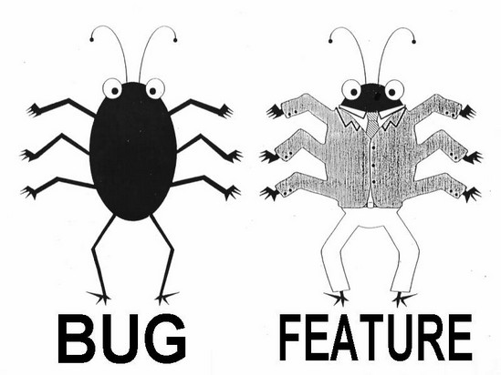

Testing 123...
How I learned to code without ever writing a test
Staðan í dag
Ground zero
Engar sjálfvirkar prófanir
Getum við gert betur?
Ekki spurning...
Smá könnun...
Hversu margir hafa skrifað test?
Hversu mörgum fannst það tefja þróun?
Hvaða gera prófanir fyrir okkur?
“A code that cannot be tested is flawed.”– Anonymous
Sjálfvirkar prófanir eru eins og bremsur á bíl
Bremsur gera okkur kleyft að fara hraðar
iofive - stöðug útgáfa
“If debugging is the process of removing bugs, then programming must be the process of putting them in.”- Edsger Dijkstra
- Hvenær erum við með stöðuga útgáfu?
- Hverju skila handvirkar prófanir?
- Nýr kóði brýtur gamlan kóða
- Hvað er til ráða?

Protractor
- e2e test
- Jasmine syntax
- Keyrir á Selenium
- Hægt að testa t.d. í Chrome, Firefox
Karma
- Unit test
- Jasmine syntax
- Hægt að testa: services, controllers, filters og directives
- Seperation of concerns
- Dependency injection
- Angular mocks
Code coverage
Setjum okkur markmið:
- Hvað getum við gert á einni viku?
- Forgangsröðun -> prófa fyrst critical features?
- Hvar viljum við standa eftir mánuð?
- Scrum -> sjálfvirkar prófanir hluti af þróunarferli?
- Hvar viljum við standa eftir 6 mánuði?
- Integration testing -> handvirkar prófanir í lágmarki
Hvar keyrum við testin?
- localhost
- Master í GIT?
- Production vél?
- Continuous Integration server?